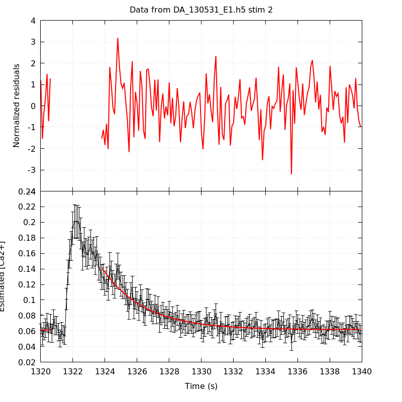
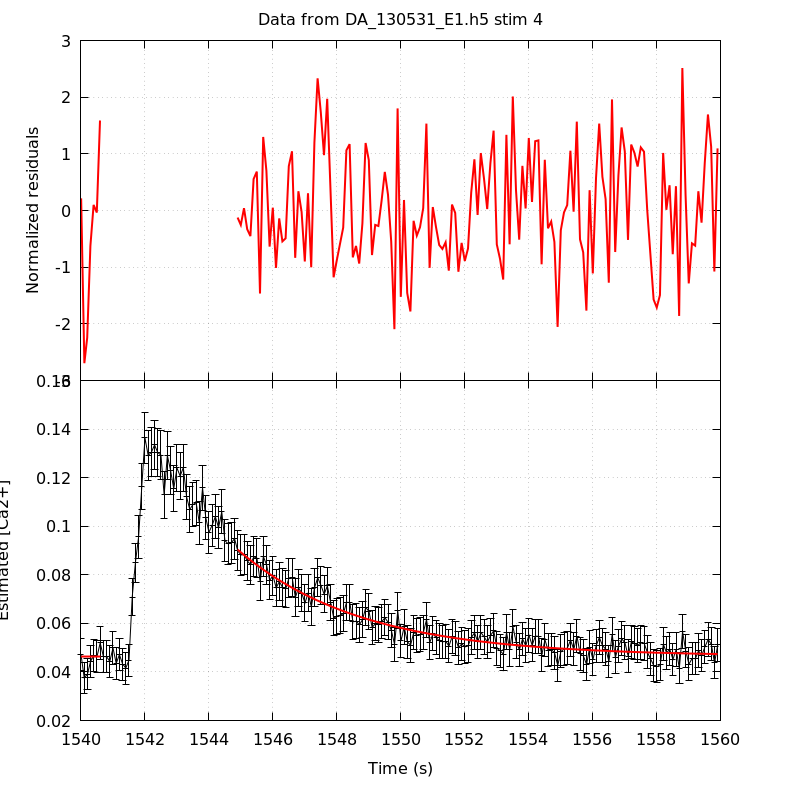
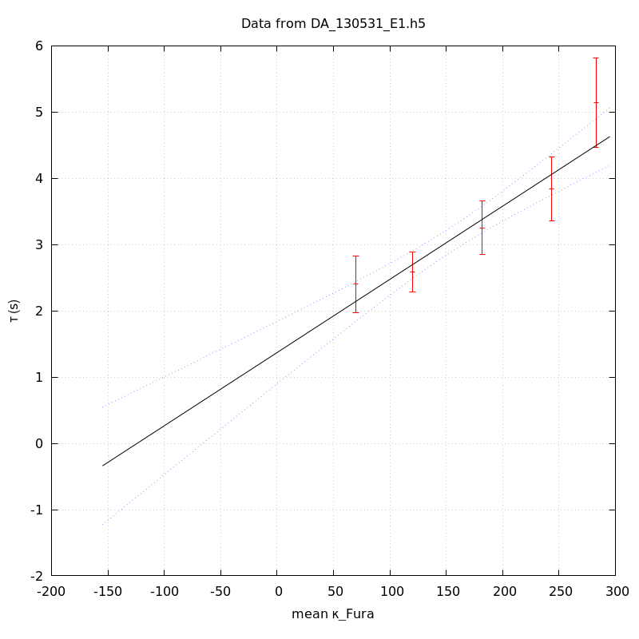

The baseline length is: 7.
When fitting tau against kappa_Fura only the transients for which the fit RSS and the lag 1 auto-correlation of the residuals were small enough, giving an overall probability of false negative of 0.02, were kept (see the numerical summary associated with each transient).
The good transients are: 1, 2, 3, 4, 5.
The time at which the 'good' transients were recorded appear in red.
On each graph, the residuals appear on top. Under the null hypothesis, if the monoexponential fit is correct they should be centered on 0 and have a SD close to 1 (not exactly 1 since parameters were obtained through the fitting procedure form the data.
The estimated [Ca2+] appears on the second row. The estimate is show in black together with pointwise 95% confidence intervals. The fitted curve appears in red. The whole transient is not fitted, only a portion of it is: a portion of the baseline made of 7 points and the decay phase starting at the time where the Delta[Ca2+] has reached 50% of its peak value.
The time appearing on the abscissa is the time from the beginning of the experiment.
Transient 1 is 'good'.

nobs = 179
number of degrees of freedom = 176
baseline length = 7
fit started from point 28
estimated baseline 0.0716402 and standard error 0.00103022
estimated delta 0.0833644 and standard error 0.00484279
estimated tau 2.40145 and standard error 0.217242
residual sum of squares: 188.711
RSS per degree of freedom: 1.07222
Probability of observing a larger of equal RSS per DOF under the null hypothesis: 0.242854
Lag 1 residuals auto-correlation: 0.119
Pr[Lag 1 auto-corr. > 0.119] = 0.056
Transient 2 is 'good'.

nobs = 169
number of degrees of freedom = 166
baseline length = 7
fit started from point 38
estimated baseline 0.0617005 and standard error 0.000728263
estimated delta 0.0802983 and standard error 0.00295197
estimated tau 2.58752 and standard error 0.15554
residual sum of squares: 197.346
RSS per degree of freedom: 1.18883
Probability of observing a larger of equal RSS per DOF under the null hypothesis: 0.0485915
Lag 1 residuals auto-correlation: 0.153
Pr[Lag 1 auto-corr. > 0.153] = 0.039
Transient 3 is 'good'.

nobs = 172
number of degrees of freedom = 169
baseline length = 7
fit started from point 35
estimated baseline 0.0479562 and standard error 0.00060362
estimated delta 0.0516261 and standard error 0.00176554
estimated tau 3.25505 and standard error 0.208802
residual sum of squares: 190.772
RSS per degree of freedom: 1.12883
Probability of observing a larger of equal RSS per DOF under the null hypothesis: 0.120436
Lag 1 residuals auto-correlation: 0.029
Pr[Lag 1 auto-corr. > 0.029] = 0.337
Transient 4 is 'good'.

nobs = 158
number of degrees of freedom = 155
baseline length = 7
fit started from point 49
estimated baseline 0.0464786 and standard error 0.000641672
estimated delta 0.0439103 and standard error 0.00127858
estimated tau 3.84203 and standard error 0.247316
residual sum of squares: 160.008
RSS per degree of freedom: 1.03231
Probability of observing a larger of equal RSS per DOF under the null hypothesis: 0.374776
Lag 1 residuals auto-correlation: 0.118
Pr[Lag 1 auto-corr. > 0.118] = 0.068
Transient 5 is 'good'.

nobs = 150
number of degrees of freedom = 147
baseline length = 7
fit started from point 57
estimated baseline 0.050037 and standard error 0.000822106
estimated delta 0.0413559 and standard error 0.00108824
estimated tau 5.14467 and standard error 0.342831
residual sum of squares: 137.32
RSS per degree of freedom: 0.93415
Probability of observing a larger of equal RSS per DOF under the null hypothesis: 0.704825
Lag 1 residuals auto-correlation: -0.020
Pr[Lag 1 auto-corr. > -0.020] = 0.563
Since the [Fura] changes during a transient (and it can change a lot during the early transients), the unique value to use as '[Fura]' is not obvious. We therefore perform 3 fits: one using the minimal value, one using the mean and one using the maximal value.
The observed tau (shown in red) are displayed with a 95% confidence interval that results from the fitting procedure and is therefore meaningful only if the fit is correct!
No serious attempt at quantifying the precision of [Fura] and therefore kappa_Fura has been made since the choice of which [Fura] to use has a larger effect and since the other dominating effect is often the certainty we can have that the saturating value (the [Fura] in the pipette) has been reached.
The straight line in black is the result of a weighted linear regression. The blue dotted lines correspond to the limits of pointwise 95% confidence intervals.

Best fit: tau = 1.43087 + 0.0111634 kappa_Fura
Covariance matrix:
[ +5.43200e-02, -3.07519e-04
-3.07519e-04, +2.08966e-06 ]
Total sum of squares (TSS) = 66.2431
chisq (Residual sum of squares, RSS) = 6.60545
Probability of observing a larger of equal RSS per DOF under the null hypothesis: 0.0855953
R squared (1-RSS/TSS) = 0.900285
Estimated gamma/v with standard error: 89.5782 +/- 11.5996
Estimates kappa_S with standard error (using error propagation): 127.175 +/- 26.6712
kappa_S confidence intervals based on parametric bootstrap
0.95 CI for kappa_S: [69.1312,223.425]
0.99 CI for kappa_S: [53.6635,268.031]

Best fit: tau = 1.37031 + 0.0110486 kappa_Fura
Covariance matrix:
[ +5.77867e-02, -3.16022e-04
-3.16022e-04, +2.04979e-06 ]
Total sum of squares (TSS) = 66.2431
chisq (Residual sum of squares, RSS) = 6.68975
Probability of observing a larger of equal RSS per DOF under the null hypothesis: 0.0824721
R squared (1-RSS/TSS) = 0.899012
Estimated gamma/v with standard error: 90.5091 +/- 11.7284
Estimates kappa_S with standard error (using error propagation): 123.026 +/- 27.0496
kappa_S confidence intervals based on parametric bootstrap
0.95 CI for kappa_S: [64.5552,219.792]
0.99 CI for kappa_S: [51.5545,270.579]

Best fit: tau = 1.3188 + 0.0108903 kappa_Fura
Covariance matrix:
[ +6.06352e-02, -3.20026e-04
-3.20026e-04, +1.98596e-06 ]
Total sum of squares (TSS) = 66.2431
chisq (Residual sum of squares, RSS) = 6.52492
Probability of observing a larger of equal RSS per DOF under the null hypothesis: 0.088685
R squared (1-RSS/TSS) = 0.9015
Estimated gamma/v with standard error: 91.8252 +/- 11.8825
Estimates kappa_S with standard error (using error propagation): 120.099 +/- 27.5107
kappa_S confidence intervals based on parametric bootstrap
0.95 CI for kappa_S: [60.6877,215.048]
0.99 CI for kappa_S: [46.2767,260.068]
5 out of 5 transients were kept.
sigma(tau): 0.217242, 0.15554, 0.208802, 0.247316, 0.342831
Residual correlation at lag 1: 0.11861125567998455, 0.15337486902431377, 0.029077447530646252, 0.11817684920648149, -0.019934172213824288
Probablity of a correlation at lag 1 smaller or equal than observed: 0.05600000000000005, 0.039000000000000035, 0.33699999999999997, 0.06799999999999995, 0.563
RSS/DOF: 1.07222, 1.18883, 1.12883, 1.03231, 0.93415